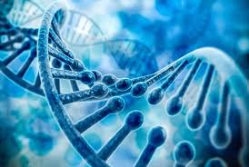

डीएनए

डीऑक्सीराइबो न्यूक्लिक अम्ल जीवित कोशिकाओं के गुणसूत्रों में पाए जाने वाले तंतुनुमा अणु को कहते हैं। इसकी संरचना घुमावदार सीढ़ी की तरह होती है। डीएनए में अनुवांशिक कूट निबद्ध रहता है।
भौतिक संरचना
डीएनए अणु त्रिविमीय होता है और दो तंतुओं से बना होता है जो कि एक-दूसरे के चारों ओर कुंडलित होते हैं। फ्रैंकलिन और विल्किन्स ने डीएनए के एक्स किरण विवर्तन के अध्ययन से यह दर्शाया है कि डीएनए द्विकुंडिलत होता है। 1953 में जेम्स वाटसन व फैंसिस क्रिक को डीएनए की संरचना की खोज करने के लिये नोबेल पुरस्कार दिया गया। वाटसन और क्रिक मॉडल के अनुसार-
- डीएनए अणु दो कुंडलियों से निर्मित है, जिसमें डीएनए के दो तंतु होते हैं। दोनों तंतु प्रतिसमांतर रूप में रहते हैं, जिसका आशय यह हुआ कि एक तंतु में न्यूक्लियोटाइड का अनुक्रम 5’ से 3’ की दिशा में और दूसरे तंतु में 3’ से 5’ की दिशा में होता है। (3’ व 5’ का आशय उन कार्बन परमाणुओं से है, जिससे फॉस्फेट समूह जुड़े रहते हैं।)
- कुण्डली का आधार शर्करा फॉस्फेट से निर्मित होता है और नाइट्रोजनी क्षारक शर्करा से सहलग्न होते हैं।
- दोनों तंतुओं के क्षारक हाइड्रोजन बंधों द्वारा जुड़े होते हैं।
- शार्गपफ़ के नियमानुसार क्षारक युग्मन अति विशिष्ट होता है। एक एडेनीन प्यूरीन क्षारक सदैव थाइमीन-पिरिमिडीन क्षारक के साथ युग्मित होता है। प्यूरीन क्षारक ग्वानीन-पिरिमिडीन क्षारक, साइटोसीन के साथ संयुक्त होता है। क्षारक के ये युग्म पूरक क्षारक कहलाते हैं।
मानव रंग पर प्रभाव
अब यह साबित हो चुका है कि किसी एक व्यक्ति का डीएनए 99.9 प्रतिशत दूसरे व्यक्ति जैसा ही होता है, चाहे वे दोनों अलग-अलग जाति के ही क्यों न हों। बाक़ी 0.1 प्रतिशत में जो विविधता है वही एक व्यक्ति को दूसरे से अलग करती है। इस तथ्य के आधार पर जीव-विज्ञानी कहते हैं कि आज का मानव अफ़्रीका में 2 लाख साल पहले रहने वाले होमो सेपियन्स का वंशज है। यानी हम सबके पूर्वज अफ़्रीकी थे। अफ़्रीका बहुत गर्म प्रदेश है। सूर्य की पराबैंगनी किरणों से बचने में काला रंग बड़ी मदद करता है। त्वचा का रंग मैलेनिन नामक एक रसायन से निर्धारित होता है। मैलेनिन की मात्रा के अधिक होने से त्वचा का रंग काला हो जाता है। काला रंग फ़ोलेट नामक विटामिन बी को भी नष्ट होने से बचाता है। काली त्वचा सूर्य की तेज़ किरणों को भीतर जाने से रोकती है, जिससे विटामिन डी3 का उत्पादन प्रभावित होता है, लेकिन जब मानव ठंडे प्रदेशों की ओर बढ़ा तो विटामिन डी3 की कमी से उसकी त्वचा का रंग हल्का पड़ने लगा। कुछ विशेषज्ञों का मानना है कि तेरह हज़ार साल पहले तक यूरोपीय लोगों का रंग गहरा हुआ करता था, वह धीरे-धीरे गोरे हुए।